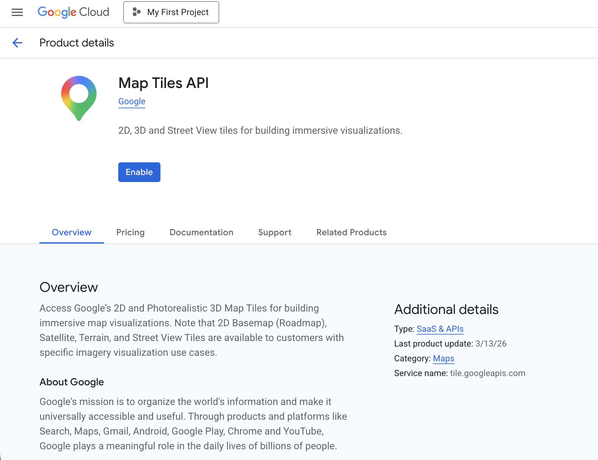
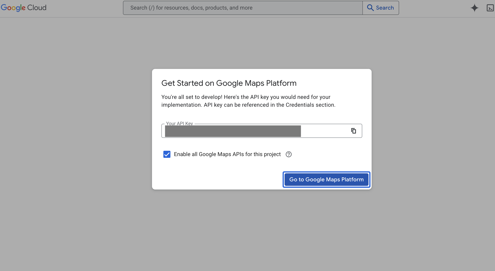
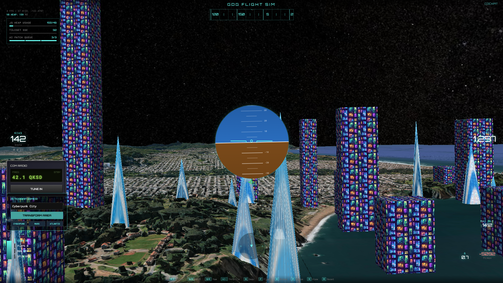

1. Module 0: Welcome to Infinite Flight
Welcome to the "Build with AI" 3D Flight Simulator workshop! We are thrilled to have you here.
🛩️ The Mission
Today, you are stepping into the shoes of an AI Systems Engineer. We have a fully functional front-end 3D flight simulator built on CesiumJS. Your mission is to rip out its mocked backend data and wire it up to a live, production-grade Google Cloud AI Backend.
By the end of this workshop, your simulator will feature: 1. Reverse Geocoding: The AI will know exactly where you are flying. 2. Procedural Biome Generation: Use Gemini and Imagen 3 to instantly terraform real-world cities into new themes (like a Cyberpunk Tokyo or a Mars Colony). 3. Collaborative ADK Agents: You will build a Copilot Agent that talks to an autonomous Control Tower Agent (built with the Google ADK) to fetch live airspace advisories.

🛠️ How this Workshop works
This is not a traditional tutorial where you copy and paste 500 lines of code into a single file.
We will be using a Ticket-Driven Workflow, just like a real engineering team. You will look at your assigned tickets, open the corresponding Python service, implement the missing logic using the Google Cloud SDKs, and verify your changes.
Let's start by getting your Google Cloud environment ready!
2. Module 1: Cloud Setup & Initial Generation
Before building the flight simulator's brain, we need to ensure your environment is correctly wired to Google Cloud. If you are using a brand new Google account, follow these steps exactly.
Step 1: Account Preparation & Billing
- Billing Account: You must have an active billing account. Go to the Google Cloud Billing Console and ensure a billing account is linked to your current project.
- Activate Cloud Shell: Click the
>_terminal icon in the top right of your Google Cloud Console. This is your primary development environment.
Step 2: Clone & Synchronize
Google Cloud Shell comes pre-configured with the tools you need, including the ultra-fast uv Python package manager!
Action Marker 1.1: Open your Cloud Shell terminal, clone the project, and synchronize the locked dependencies.
git clone https://github.com/jorgeajimenez/ai-flight-simulator.git
cd ai-flight-simulator
uv sync
Step 3: Identity & Access Management (IAM)
We've provided a script to automate the creation of your Google Cloud Project, enable APIs (Vertex AI, Geocoding, Secret Manager, TTS), and configure your Service Account.
Action Marker 1.2: Run the setup script in your terminal.
bash scripts/setup_gcp.sh
Pause for the Maps API Key: During execution, the script will automatically pause and present you with two highly visible, clickable links.
- While the script is paused, hold
CTRL(orCMDon Mac) and click the STEP 1 link. This will open the Map Tiles API page for your specific project. Click the blue ENABLE button.

- Next, hold
CTRL(orCMDon Mac) and click the STEP 2 link to open the Credentials page. Click Create Credentials -> API Key and copy it.

- Go back to your Cloud Shell terminal, paste the key, and press Enter. The script will securely lock it inside Google Cloud Secret Manager.
Step 4: Verification (The Vertex AI Handshake)
Let's verify that the AI is working before touching the code. We will use Gemini 2.5 Flash to generate a custom 3D building texture.
Action Marker 1.3: Execute the texture verification script.
uv run python scripts/generate_texture.py "Cyberpunk hacker apartment block..."
Verification: If you see Saved texture to assets/texture.svg, your cloud environment is structurally sound.
Architecture: The Cloud Handshake
💡 A Note on Mermaid Diagrams (Docs as Code) Throughout this codelab, you will see
mermaidcode blocks followed by an image of a diagram. Mermaid is a popular open-source tool that allows engineers to generate architectural flowcharts using simple, readable text. We have intentionally included both the raw Mermaid code and the final rendered image as a pedagogical tool, so you can learn how to easily document your own AI architectures!The diagram below shows how your Cloud Shell environment is communicating with Vertex AI using the credentials we just generated.
graph LR CS[Cloud Shell / uv] -->|Auth via service-account-key.json| VAI[Vertex AI API] VAI -->|Gemini 2.5 Flash| IMG[Generated Texture] IMG -->|Saved to| FILE[assets/texture.png]
Notice how
uvauthenticates via theservice-account-key.jsonfile we generated in the setup script. This establishes a secure, zero-trust handshake with the Vertex AI API, allowing Gemini 2.5 Flash to generate our initial SVG texture and save it locally to the assets folder. This fundamental auth flow will power the rest of our AI services.

3. Module 2: Enterprise Modular Architecture & TDD
In this module, we transition from a monolithic "script" to an enterprise-grade Service-Oriented Architecture (SOA). We will also adopt a Test-Driven Development (TDD) workflow to ensure our AI application is robust and "re-buildable."
The "Essential 6" Stack
To scale this simulator, we've deconstructed the backend into six specialized services.
graph TD
App[app.py Orchestrator] --> Config[0. Config]
App --> Vault[1. Secret Manager]
App --> Geo[2. Reverse Geocoding]
App --> Vision[3. Procedural Biomes]
App --> Audio[4. Cloud TTS]
App --> State[5. Firestore Ledger]
App --> Agents[6. ADK Control Tower]

As seen in the diagram above, our app.py acts as a central orchestrator. Instead of containing all the business logic, it delegates tasks to specialized modules. This prevents the "monolith" anti-pattern and makes it incredibly easy to swap out services (like changing our TTS provider or database) without breaking the entire application.
Each service has a single responsibility and is isolated for maximum testability:
- Service 0 (Config): Environment detection and logging initialization.
- Service 1 (Vault): Zero-trust secret management (Secret Manager) with in-memory caching for performance (e.g.,
get_maps_api_key). - Service 2 (Geospatial): Reverse geocoding utility using the Google Maps API.
- Service 3 (AI Vision): Multi-stage generative pipeline (Gemini + Imagen).
- Service 4 (Audio): Immersive Pilot voice synthesis (Text-to-Speech).
- Service 5 (State Sync): Shared Persistent World persistence (Firestore).
The TDD Workflow (Red-Green-Refactor)
In cloud engineering, TDD is paramount. Executing full integration tests against live generative AI endpoints for every code iteration introduces latency and unintended API consumption.
To circumvent this, we use pytest-mock to simulate Google Cloud responses locally.
Action Marker 2.1: Execute the test suite for the Vault Service. This execution will intentionally fail (the "Red" state) because the service is not yet implemented.
uv run pytest tests/test_vault.py
The terminal output will yield an AssertionError. To resolve this and transition to the "Green" state, you must implement the Vault Service.
Action Marker 2.2: Open services/vault.py and paste the following implementation. This code integrates an in-memory cache to minimize redundant network calls, and an environment variable fallback, perfectly satisfying our tests.
import os
from google.cloud import secretmanager
from config import GCPConfig
class VaultService:
# Initialize an in-memory variable to cache retrieved secrets
_api_key_cache = None
@staticmethod
def get_maps_api_key() -> str:
cache_key = "GOOGLE_MAPS_API_KEY"
# Consult the cache to prevent redundant API latency
if VaultService._api_key_cache:
return VaultService._api_key_cache
try:
# Instantiate the official Google Cloud Secret Manager client
client = secretmanager.SecretManagerServiceClient()
# Construct the fully qualified resource name
name = f"projects/{GCPConfig.PROJECT_ID}/secrets/{cache_key}/versions/latest"
# Execute the secure retrieval request
response = client.access_secret_version(request={"name": name})
secret_payload = response.payload.data.decode("UTF-8")
# Persist the payload in the local cache
VaultService._api_key_cache = secret_payload
return secret_payload
except Exception as e:
print(f"Vault Security Exception: {e}")
# Fallback to environment variable as defined in our tests
return os.environ.get("GOOGLE_MAPS_API_KEY")
Action Marker 2.3: Re-execute the test suite. The terminal should now indicate 3 passed (the "Green" state).
uv run pytest tests/test_vault.py
Directory Blueprint
By the end of this refactor, your project structure will look like this:
infinite-loop-simulator/
├── app.py # The Orchestrator (< 50 lines)
├── config.py # Service 0: GCP Configuration
├── services/ # The Service Core
│ ├── vault.py # Service 1: Secret Management
│ ├── geospatial.py # Service 2: Reverse Geocoding
│ └── ... # (Services 3-5)
└── tests/ # The TDD Suite
This structure makes the application "AI-Wirable"—meaning each service can be independently tested and easily integrated into the main application via standardized interfaces.
🔌 The Orchestrator (app.py)
Before we can test our newly unlocked VaultService, our Flask backend needs routes that the frontend can call. In the starter code, app.py only has the basic / index route and a [CODELAB ORCHESTRATION] placeholder block at the bottom.
Instructions: Open app.py in your editor and locate the [CODELAB ORCHESTRATION] block near the bottom. We are going to paste two separate endpoints into this space.
Step 1: The Locate Endpoint
First, paste the /locate endpoint. This route handles the "WHERE AM I?" button click from the frontend. Notice how it reverse geocodes the coordinates and delegates the airspace analysis to the Copilot Agent.
@app.route("/locate", methods=["POST"])
def locate():
"""
Reverse geocodes coordinates and hails the Copilot to contact the Control Tower.
"""
try:
data = request.json
lat, lon = data.get("lat"), data.get("lon")
# 1. Ground the AI: Convert coordinates into a real city name
city_name = ReverseGeocode.get_location_name(lat, lon)
# 2. Hailing the Copilot: Triggers the direct ADK Agent-to-Agent call
atc_response = CopilotAgent.request_airspace_update(city_name)
# 3. Text-to-Speech: Synthesize the transmission
audio_b64 = AudioSynthesisService.synthesize_advisory(
atc_response, voice_type="atc"
)
return jsonify({"audio": audio_b64, "text": atc_response, "city": city_name})
except Exception as e:
logger.error(f"Locate Error: {e}")
return jsonify({"error": str(e)}), 500
Step 2: The Terraform Endpoint
Next, immediately below the /locate route, paste the /terraform endpoint. This route is the heart of our simulator, chaining together 4 different cloud services sequentially to alter the physical world using the Procedural Biome Engine.
@app.route("/terraform", methods=["POST"])
def terraform():
"""
Uses the Procedural Biome Engine to generate a new world texture for the current city.
"""
try:
data = request.json
lat, lon, prompt = (
data.get("lat"),
data.get("lon"),
data.get("prompt", "Cyberpunk City"),
)
# 1. Reverse Geocode to identify the city biome
city_name = ReverseGeocode.get_location_name(lat, lon)
# 2. Procedural Biome Generation: Gemini designs it, Imagen paints it
ai_result = AIVisionService.generate_biome_texture(city_name, prompt)
# 3. Voice Briefing
audio_b64 = AudioSynthesisService.synthesize_advisory(ai_result["advisory"])
# 4. Persistence: Upload texture to CDN and log to standard event log
texture_url = PersistentWorldClient.log_terraform_event(
lat, lon, prompt, ai_result["image_b64"]
)
# 5. Calculate bounds for the frontend Cesium renderer
offset = 0.0025
bounds = [lat - offset, lon - offset, lat + offset, lon + offset]
return jsonify(
{
"image": ai_result["image_b64"],
"audio": audio_b64,
"narrative": ai_result["advisory"],
"texture_url": texture_url,
"city": city_name,
"bounds": bounds
}
)
except Exception as e:
logger.error(f"Terraforming Error: {e}")
return jsonify({"error": str(e)}), 500
🚀 Your First Flight: Test the Simulator!
Now that you've implemented the Vault Service using the Gemini CLI, the backend can finally pull the Google Maps API Key and serve it to the frontend. Let's test it!
- Start the Flask server in your Cloud Shell terminal:
uv run app.py - Click the Web Preview button (the eye icon) in the top right of your Cloud Shell.
- Select Preview on port 8080.
🗑️ Memory Eviction Built-In
Before we start building the AI features, note that the 3D map has built-in garbage collection logic. Our simulator only allows a maximum of 3 concurrent terraformed tiles. If you generate a 4th, the oldest tile is purged from memory and the 3D world to keep the browser running smoothly.

The Web Preview feature securely tunnels port 8080 from your Cloud Shell virtual machine directly to your browser. If you don't see the CesiumJS globe, double-check that your service-account-key.json is in the root directory and that the Flask server output doesn't show any startup errors.
You should now see the 3D globe load successfully! The AI terraforming features won't work yet, but you can fly around the world. Keep the server running and open a new terminal tab for the next modules.
4. Module 3: Telemetry & Reverse Geocoding
To create a believable 3D world, our generative AI needs to know where it is. In this module, we will implement Reverse Geocoding to convert the pilot's raw latitude and longitude coordinates into a human-readable city name.
Grounding the AI
If a pilot asks to terraform the terrain into a "Cyberpunk City," the AI needs context. A Cyberpunk version of Paris should look different from a Cyberpunk version of Tokyo. By reverse-geocoding the coordinates, we provide this crucial "grounding" to the Gemini model.
graph LR
Coord[Pilot Lat/Lon] --> Geo[ReverseGeocode Utility]
Geo -->|Google Maps API| API[Geocoding API]
API -->|JSON Data| Geo
Geo -->|City, Country Name| Output

🎯 Ticket #1: Reverse Geocoding Utility
Your task is to create a utility that leverages the Google Maps API to translate coordinates into city names.
Step 1: Open services/geospatial.py
Navigate to services/geospatial.py. You will see the EarthEngineClient, which the frontend uses for base mapping. We need to add a new class at the bottom.
Step 2: Implement ReverseGeocode
Add the following class to the bottom of the file. Notice how it securely fetches the Maps API key from the VaultService we configured earlier.
import requests
from config import logger
from services.vault import VaultService
class ReverseGeocode:
"""
Reverse Geocoding Utility using Google Maps API.
Converts lat/lon to human-readable city names.
"""
@staticmethod
def get_location_name(lat: float, lon: float) -> str:
"""
Calls Google Maps Reverse Geocoding API.
Returns "City, Country" or "Unknown Location".
"""
try:
api_key = VaultService.get_maps_api_key()
if not api_key:
logger.warning("Geospatial: No Maps API Key found in Secret Manager.")
return "Unknown Location"
url = f"https://maps.googleapis.com/maps/api/geocode/json?latlng={lat},{lon}&key={api_key}"
response = requests.get(url)
response.raise_for_status()
data = response.json()
if data.get("status") == "OK" and data.get("results"):
# Extract city and country from address_components
components = data["results"][0].get("address_components", [])
city = ""
country = ""
for component in components:
types = component.get("types", [])
if "locality" in types:
city = component.get("long_name", "")
elif "country" in types:
country = component.get("long_name", "")
if city and country:
return f"{city}, {country}"
elif country:
return country
return "Unknown Location"
except Exception as e:
logger.error(f"Geospatial: Reverse Geocode Error: {e}")
return "Unknown Location"
Step 3: Test and Verify
While you can't test this in isolation yet, this foundational utility will be crucial for the next modules where we build the AI Biome Generator and the Copilot Agent!
5. Module 4: Generative Biomes (Procedural Architect)
The core imaginative engine of the simulator resides within the AIVisionService. In this module, we transition away from literal, constrained satellite imagery and embrace Procedural Biome Generation.
The Biome Pipeline
Instead of asking AI to perform complex image-to-image alignment (which often results in distorted roads), we are using a two-model pipeline to generate stunning, thematic textures from scratch based purely on our location and prompt.
- The Biome Architect (Gemini 2.5 Flash): Gemini takes the real-world city name (e.g., "Paris") and the pilot's prompt (e.g., "Cyberpunk City") and generates a highly detailed, top-down technical prompt. It essentially "designs" the rules of the biome.
- The Texture Painter (Imagen 3): We pass Gemini's technical prompt into the Imagen 3 model. Imagen paints a beautiful, seamless tile representing the newly terraformed city.
sequenceDiagram
participant App
participant G25 as Gemini (Architect)
participant I3 as Imagen 3 (Painter)
App->>G25: City Name + User Prompt
G25-->>App: JSON {technical_prompt, advisory}
App->>I3: Generate Image(technical_prompt)
I3-->>App: Raw Image Bytes

This pipeline is honest, highly performant, and perfectly highlights the strengths of both Large Language Models and Diffusion Models.
🎯 Ticket #2: Procedural Biome Generation
Your task is to refactor the AI Vision service to utilize this new Architect/Painter pipeline.
Step 1: Open services/ai_vision.py
Navigate to services/ai_vision.py and review the BiomeDesign schema. Notice how we use Pydantic to force Gemini to return structured JSON.
Step 2: Implement the Architect and Painter
Replace the generate_biome_texture method with the following code. Notice how we first prompt gemini-2.5-flash, parse the structured output, and then feed that exact prompt into imagen-3.0-generate-001.
@staticmethod
def generate_biome_texture(city_name: str, user_prompt: str) -> dict:
"""
Uses Gemini to architect a biome and Imagen 3 to paint the texture.
"""
try:
client = genai.Client(
vertexai=True,
project=GCPConfig.PROJECT_ID,
location=GCPConfig.LOCATION
)
# STEP 1: The Biome Architect (Gemini 2.5 Flash)
architect_prompt = f"""
You are a Biome Architect. Your goal is to design a procedural texture for the city of {city_name}.
The pilot wants to transform the terrain into: '{user_prompt}'.
1. Generate a technical prompt for Imagen 3. This prompt should describe a TOP-DOWN,
high-resolution satellite-style texture that looks like a seamless procedural map.
It should capture the 'vibe' of {user_prompt} while hinting at the layout of {city_name}.
2. Provide a short, 1-sentence pilot advisory about entering this new biome.
"""
logger.info(f"AI Vision: Architecting biome for {city_name}...")
gemini_response = client.models.generate_content(
model='gemini-2.5-flash',
contents=architect_prompt,
config=types.GenerateContentConfig(
response_mime_type="application/json",
response_schema=BiomeDesign,
temperature=0.7
)
)
design = BiomeDesign.model_validate_json(gemini_response.text)
# STEP 2: The Texture Painter (Imagen 3)
logger.info(f"AI Vision: Painting texture: '{design.imagen_prompt[:50]}...'")
imagen_response = client.models.generate_images(
model='imagen-3.0-generate-001',
prompt=design.imagen_prompt,
config=types.GenerateImagesConfig(
number_of_images=1,
output_mime_type="image/png"
)
)
final_image_bytes = imagen_response.generated_images[0].image_bytes
image_b64 = base64.b64encode(final_image_bytes).decode('utf-8')
return {
"advisory": design.advisory,
"image_b64": image_b64
}
except Exception as e:
logger.error(f"AI Vision Error: {e}")
raise e
Step 3: Test and Verify
Restart your Flask server. Fly to a city, enter a prompt in the AI TERRAFORMER box, and click the launch button. You should hear the advisory, and see the map update with the procedurally generated Imagen texture!

6. Module 5: Immersive Audio (Text-to-Speech)
A flight simulator is not complete without an immersive audio experience. In this module, we will implement Service 4: The Immersive Audio Engine to turn Gemini's text advisories into a high-quality human voice.
Multi-Voice Immersion
We are using Cloud Text-to-Speech to bring our AI entities to life. To differentiate between the Pilot and the Control Tower (ATC), our service accepts a voice_type parameter to select distinct voice models:
- The Pilot (
voice_type="pilot"): Usesen-US-Studio-Ofor natural briefings. - The ATC (
voice_type="atc"): Usesen-US-Journey-Dfor an authoritative tone.
graph TD
Text[AI Generated Advisory] --> TTS[Cloud TTS Engine]
TTS -->|en-US-Journey-D| ATC[Audio Bytes]
ATC --> FE[Frontend Speaker]

This diagram highlights the routing of AI-generated text to the Cloud TTS Engine, which then returns base64-encoded audio directly to the browser.
Implementation: AudioSynthesisService
Action Marker 5.1: Terminate the Flask server (CTRL+C). Open services/audio_engine.py, locate the [CODELAB STEP 4] marker, and paste the following neural TTS synthesis code.
import base64
from google.cloud import texttospeech
class AudioSynthesisService:
@staticmethod
def synthesize_advisory(text: str, voice_type: str = "pilot") -> str:
# Instantiate the Google Cloud Text-to-Speech client
client = texttospeech.TextToSpeechClient()
# Configure the voice based on the requested persona
voice_name = "en-US-Journey-D" if voice_type == "atc" else "en-US-Studio-O"
voice = texttospeech.VoiceSelectionParams(
language_code="en-US",
name=voice_name
)
# Request MP3 format. A speaking_rate of 1.05 provides a professional cadence.
audio_config = texttospeech.AudioConfig(
audio_encoding=texttospeech.AudioEncoding.MP3,
speaking_rate=1.05
)
response = client.synthesize_speech(
input=texttospeech.SynthesisInput(text=text),
voice=voice,
audio_config=audio_config
)
# Return base64 encoded bytes
return base64.b64encode(response.audio_content).decode('utf-8')
Action Marker 5.2: Restart the Flask server (uv run app.py).
7. Module 6: Agentic Intelligence (Google ADK)
In this final module, we move beyond simple LLM prompts and build Autonomous Agents using the Google Agent Development Kit (ADK).
The Copilot and The Control Tower
We are going to implement an Agent-to-Agent (A2A) workflow: 1. The Copilot Agent: A standard Python class that handles requests from the human pilot in the cockpit. 2. The Control Tower Agent: An autonomous AI built with the Google ADK. It has access to external Tools (Python functions) that it can decide to execute on its own to gather information before responding to the Copilot.
To keep things simple, we will give the Control Tower a single tool: the ability to look up the local time for a specific city.
sequenceDiagram
participant FE as Frontend
participant Copilot as Copilot Agent
participant Tower as ADK Control Tower
participant Tool as get_local_time Tool
FE->>Copilot: Request Airspace Update
Copilot->>Tower: "Flight 001 over City, requesting time."
Tower->>Tool: execute(City Name)
Tool-->>Tower: "9:00 AM Local Time"
Tower-->>Copilot: Synthesized Briefing
Copilot-->>FE: Final Audio Briefing

🎯 Tickets #3 & #4: The ADK Agents
Your task is to implement both agents and wire them together.
Step 1: Open services/control_tower.py
Navigate to services/control_tower.py.
Step 2: Implement the ADK Control Tower
Copy the following code. Pay close attention to how get_local_time is passed into the Agent as a tool, and how the Runner handles the session memory.
from google.genai import types
from google.adk import Agent, Runner
from google.adk.sessions import InMemorySessionService
from config import logger
def get_local_time(city_name: str) -> str:
"""Fetches the current local time for the specified city."""
logger.info(f"Tool Execution: Fetching simulated time for {city_name}...")
return "9:00 AM Local Time"
# 1. Initialize ADK Agent with Tool
control_tower_agent = Agent(
name="ControlTower",
model="gemini-2.5-flash",
instruction=(
"You are the Global Control Tower AI. "
"When a Copilot contacts you with their location, ALWAYS use the 'get_local_time' "
"tool to find their local time. "
"Respond concisely with the local time and one interesting factoid about their city. "
"Keep the response under 3 sentences."
),
tools=[get_local_time]
)
# 2. Initialize ADK Runner with Memory
session_service = InMemorySessionService()
tower_runner = Runner(
agent=control_tower_agent,
app_name="infinite_flight",
session_service=session_service,
auto_create_session=True
)
Step 3: Implement the Copilot
Below the Control Tower code, add the CopilotAgent. This agent acts on behalf of the user to trigger the Control Tower's ADK Runner.
class CopilotAgent:
"""
Cockpit AI Agent that interacts with the human pilot.
Orchestrates the A2A call directly to the Control Tower ADK Runner.
"""
@staticmethod
def request_airspace_update(city_name: str) -> str:
"""
Directly invokes the Control Tower ADK agent and returns the briefing.
"""
try:
logger.info(f"Copilot Agent: Hailing Control Tower for {city_name}...")
request_content = f"Control Tower, this is Flight 001 Copilot over {city_name}. Requesting time and local factoid."
# 3. Execute ADK Runner Loop directly (Simple A2A)
events = tower_runner.run(
user_id="pilot_1",
session_id="flight_001_session",
new_message=types.Content(
role="user",
parts=[types.Part.from_text(text=request_content)]
)
)
final_text = ""
for event in events:
if getattr(event, 'error_message', None):
logger.error(f"ADK Event Error: {event.error_message}")
if event.content and event.content.parts:
for part in event.content.parts:
if part.text:
final_text += part.text
final_text = final_text.strip()
if not final_text:
logger.warning(f"Copilot Agent: Received empty transmission. Using fallback.")
return f"Captain, I'm getting static from the Control Tower over {city_name}. Standby."
logger.info(f"Copilot Agent: Received transmission: {final_text}")
return final_text
except Exception as e:
logger.error(f"Copilot Agent Error: {e}")
return f"Captain, we are unable to reach the Control Tower. Standard clear conditions assumed for {city_name}."
Step 4: Test and Verify
Restart your Flask server. Fly to a new city, open your Comms Radio, and click WHERE AM I?. Watch your terminal logs. You will see the ADK autonomously decide to execute the get_local_time tool, read the result, and stream a completely unique, location-aware voice briefing back to your cockpit!
8. 🚀 Codelab: Build the Infinite Flight Persistent World
Welcome to the official GDG "Build with AI" Workshop. In this codelab, you will wire up a 3D flight simulator to a modern Google Cloud AI Backend.
🧠 The Curriculum
The codelab is broken down into 6 distinct modules:
- Module 1: Cloud Setup - Provisioning your Google Cloud project and enabling required APIs.
- Module 2: Modular Architecture - Understanding the Service-Oriented Architecture (SOA) and the ticketing workflow.
- Module 3: Telemetry & Reverse Geocoding - Implementing the Google Maps API to ground the AI with real-world city names.
- Module 4: Generative Biomes - Using Gemini 2.5 Flash as an Architect and Imagen 3 as a Painter to procedurally generate immersive new worlds.
- Module 5: Immersive Audio - Converting the AI's pilot advisories into high-quality human speech using Cloud TTS.
- Module 6: Agentic Intelligence - Building autonomous AI Agents using the Google Agent Development Kit (ADK) that can actively call external tools.
🎫 The Workflow
You will act as an engineer clearing tickets from a Jira-style board. Your tracker is tickets_v2.csv (or the equivalent UI provided by your instructor). Look at the ticket, follow the module instructions to implement the code, and clear the ticket.
Let's get flying.